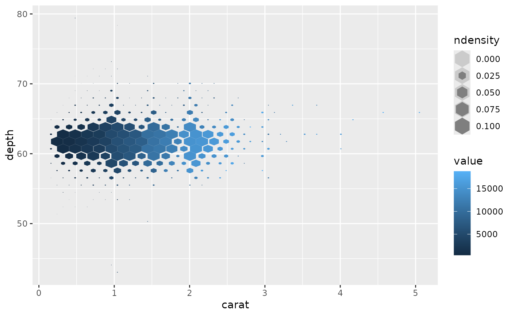

Hexagonal heatmap of 2d bin summaries sized by bin counts
Source:R/GeomHextile.R, R/geom_hextile.R
geom_hextile.RdDivides the plane into regular hexagons,
counts the number of cases in each hexagon, and then (by default)
maps the number of cases to the hexagon size and fill.
If a z aesthetic is provided, the hexagon fill is instead mapped to
the summary of z with fun. z2 and z3 are made available in the case
that multiple summary statistics are required.
Hexagon bins avoid the visual artefacts sometimes generated by
the very regular alignment of ggplot2::geom_bin_2d().
Usage
geom_hextile(
mapping = NULL,
data = NULL,
stat = "summary_hextile",
position = "identity",
...,
na.rm = FALSE,
show.legend = NA,
inherit.aes = TRUE
)
stat_summary_hextile(
mapping = NULL,
data = NULL,
geom = "hextile",
position = "identity",
...,
bins = 30,
binwidth = NULL,
drop = TRUE,
fun = "mean",
fun.args = list(),
fun2 = "mean",
fun2.args = list(),
fun3 = "mean",
fun3.args = list(),
na.rm = FALSE,
show.legend = NA,
inherit.aes = TRUE
)Arguments
- mapping
Set of aesthetic mappings created by
aes(). If specified andinherit.aes = TRUE(the default), it is combined with the default mapping at the top level of the plot. You must supplymappingif there is no plot mapping.- data
The data to be displayed in this layer. There are three options:
If
NULL, the default, the data is inherited from the plot data as specified in the call toggplot().A
data.frame, or other object, will override the plot data. All objects will be fortified to produce a data frame. Seefortify()for which variables will be created.A
functionwill be called with a single argument, the plot data. The return value must be adata.frame, and will be used as the layer data. Afunctioncan be created from aformula(e.g.~ head(.x, 10)).- position
A position adjustment to use on the data for this layer. This can be used in various ways, including to prevent overplotting and improving the display. The
positionargument accepts the following:The result of calling a position function, such as
position_jitter(). This method allows for passing extra arguments to the position.A string naming the position adjustment. To give the position as a string, strip the function name of the
position_prefix. For example, to useposition_jitter(), give the position as"jitter".For more information and other ways to specify the position, see the layer position documentation.
- ...
Other arguments passed on to
layer()'sparamsargument. These arguments broadly fall into one of 4 categories below. Notably, further arguments to thepositionargument, or aesthetics that are required can not be passed through.... Unknown arguments that are not part of the 4 categories below are ignored.Static aesthetics that are not mapped to a scale, but are at a fixed value and apply to the layer as a whole. For example,
colour = "red"orlinewidth = 3. The geom's documentation has an Aesthetics section that lists the available options. The 'required' aesthetics cannot be passed on to theparams. Please note that while passing unmapped aesthetics as vectors is technically possible, the order and required length is not guaranteed to be parallel to the input data.When constructing a layer using a
stat_*()function, the...argument can be used to pass on parameters to thegeompart of the layer. An example of this isstat_density(geom = "area", outline.type = "both"). The geom's documentation lists which parameters it can accept.Inversely, when constructing a layer using a
geom_*()function, the...argument can be used to pass on parameters to thestatpart of the layer. An example of this isgeom_area(stat = "density", adjust = 0.5). The stat's documentation lists which parameters it can accept.The
key_glyphargument oflayer()may also be passed on through.... This can be one of the functions described as key glyphs, to change the display of the layer in the legend.
- na.rm
If
FALSE, the default, missing values are removed with a warning. IfTRUE, missing values are silently removed.- show.legend
logical. Should this layer be included in the legends?
NA, the default, includes if any aesthetics are mapped.FALSEnever includes, andTRUEalways includes. It can also be a named logical vector to finely select the aesthetics to display.- inherit.aes
If
FALSE, overrides the default aesthetics, rather than combining with them. This is most useful for helper functions that define both data and aesthetics and shouldn't inherit behaviour from the default plot specification, e.g.borders().- geom, stat
geom,stat Override the default connection between
geom_hextile()andstat_summary_hextile(). For more information about overriding these connections, see how the stat and geom arguments work.- bins
numeric vector giving number of bins in both vertical and horizontal directions. Set to 30 by default.
- binwidth
Numeric vector giving bin width in both vertical and horizontal directions. Overrides
binsif both set.- drop
drop if the output of
funisNA.- fun, fun2, fun3
function for summary.
- fun.args, fun2.args, fun3.args
A list of extra arguments to pass to
fun
Aesthetics
geom_hextile() understands the following aesthetics. Required aesthetics are displayed in bold and defaults are displayed for optional aesthetics:
| • | x | |
| • | y | |
| • | ||
alpha | → NA | |
| • | colour | → via theme() |
| • | fill | |
→ via theme() | • | |
group | → inferred | |
| • | linetype | → via theme() |
| • | linewidth | |
→ via theme() | • | |
size | → 1 |
Learn more about setting these aesthetics in vignette("ggplot2-specs").
stat_summary_hextile() understands the following aesthetics. Required aesthetics are displayed in bold and defaults are displayed for optional aesthetics:
| • | x | |
| • | y | |
| • | ||
z, z2, z3: | value passed to each summary function | |
| • | fill | → after_stat(value) |
| • | group | |
| → inferred | • | |
size | → after_stat(count) | |
| • | weight | → 1 |
Learn more about setting these aesthetics in vignette("ggplot2-specs").
Computed variables
These are calculated by the 'stat' part of layers and can be accessed with delayed evaluation.
after_stat(x),after_stat(y)
location.after_stat(count)
number of points in bin.after_stat(density)
density of points in bin, scaled to integrate to 1.after_stat(ncount)
count, scaled to maximum of 1.after_stat(ndensity)
density, scaled to maximum of 1.after_stat(value)
number of points in bin, or ifzis supplied, value of summary statistic fromz.after_stat(value2)
ifz2is supplied, value of summary statistic fromz2.after_stat(value3)
ifz3is supplied, value of summary statistic fromz3.
Controlling binning parameters for the x and y directions
The arguments bins and binwidth can be set separately for the x and y directions.
When given as a scalar, one value applies to both directions.
When given as a vector of length two, the first is applied to the x direction
and the second to the y direction.
Alternatively, these can be a named list containing x and y elements,
for example list(x = 10, y = 20).
Examples
library(ggplot2)
d <- ggplot(diamonds, aes(carat, depth, z = price))
# fill: median price in bin
# size: number of points in bin
d +
geom_hextile(fun = "median") +
scale_size_tile(limits = c(0, 100))
# fill: mean price in bin
# size: sum of prices in bin
d +
geom_hextile(aes(z2 = price, size = after_stat(value2)), fun2 = "sum") +
scale_size_tile(limits = c(0, 1e5))
# fill: mean price in bin
# size: density, scaled to maximum of 1, weighted by price
d +
geom_hextile(aes(weight = price, size = after_stat(ndensity))) +
scale_size_tile(limits = c(0, 0.1))

# fill: number of points in bin
# size: number of points in bin
ggplot(diamonds, aes(carat, depth)) +
geom_hextile() +
scale_size_tile(limits = c(0, 100))